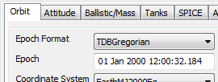
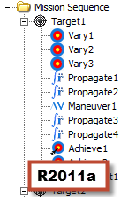
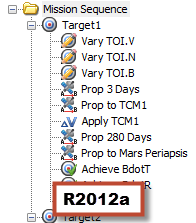

The General Mission Analysis Tool (GMAT) version R2012a was released May 23, 2012. This is the first public release in over a year, and is the 5th public release for the project. In this release:
52,000 lines of code were added
Code and documentation was contributed by 9 developers from 2 organizations
6847 system tests were run every weeknight
This is a beta release. It has undergone extensive testing in many areas, but is not considered ready for production use.
GMAT can now show the ground track of a spacecraft using the new GroundTrackPlot resource. This view shows the orbital path of one or more spacecraft projected onto a two-dimensional map of a celestial body, and can use any celestial body that you have configured. Here's an example of the plot created as part of the default mission:

Sometimes you need to create a spacecraft in a particular orbit but don't exactly know the proper orbital element values. Before, you had to make a rough estimate, or go back to the math to figure it out. Now, GMAT R2012a comes with a new Orbit Designer that does this math for you.
The Orbit Designer helps you create one of six different Earth-centered orbit types, each with a flexible array of input options:
sun-synchronous
repeat sun-synchronous
repeat ground track
geostationary
molniya
frozen
Once you've created your desired orbit, it is automatically imported into the Spacecraft resource for later use. Here's an example of a sun-synchronous orbit using the Designer. To open the Orbit Designer, click the button on the Spacecraft properties window.
We've done significant work toward having a robust eclipse
location tool in GMAT, but this work is not complete. This release comes
with an alpha-stage plugin (disabled by default) called
libEventLocator. When enabled, this plugin adds a
new EclipseLocator resource that can be configured
to calculate eclipse entry and exit times and durations with respect to
any configured Spacecraft and celestial bodies. The eclipse data can be
reported to a text file or plotted graphically. Some known limitations
include an assumption of spherical celestial bodies and a lack of
light-time correction. This feature has not been rigorously tested, and
may be brittle. We've included it here as a preview of what's coming in
future releases.
Likewise, we've included an experimental library and plugin that exposes a plain-C interface to GMAT's internal dynamics model functionality. This interface is intended to fill a very specific need: to expose force model derivates from GMAT to external software, especially MATLAB, for use with an external integrator (though GMAT can do the propagation also, if desired). The interface is documented by an API reference for now.
We've made lots of improvements to GMAT's already capable force model suite. Here's some highlights:
GMAT now models Earth ocean and pole tides. This is a script-only option that can be turned on alongside an Earth harmonic gravity model; turn it on with a line like this:
ForceModel.GravityField.Earth.EarthTideModel = 'SolidAndPole'You can now apply relativistic corrections using the checkbox on the properties for Propagator.
GMAT can now use the DE421 and DE424 ephemerides for the solar system. These files are included in the installer, but are not activated by default. To use either of these ephemerides, double-click the SolarSystem folder and select it from the Ephemeris Source list. Or include the following script line:
SolarSystem.EphemerisSource = 'DE421'
There's also a new SolarSystem resource called SolarSystemBarycenter that represents the barycenter as given by the chosen ephemeris source (DE405, DE421, SPICE, etc.). This resource can be used directly in reports or as the origin of a user-defined coordinate system.
You can now input the epoch of a Spacecraft orbit in the TDB time system (in both Modified Julian and Gregorian formats).
|  |
We've made significant improvements to the mission tree to make it more user-friendly to heavy users. The biggest improvement is that you can now filter the mission sequence in different ways to make complex missions easier to understand, for example by hiding non-physical events or collapsing the tree to only its top-level elements.

GMAT also now lets you name your mission sequence commands. Thus,
instead of a sequence made up of commands like "Optimize1" and
"Propagate3", you can label them "Optimize LOI" and "Prop to Periapsis".
This example shows the Ex_HohmannTransfer.script
sample with labeled commands.

Finally, we added the ability to undock the mission tree so you can place it and the resources tree side by side and see both at the same time. To undock the tree, right-click the Mission tab and drag it from its docked position. To dock it again, just close the new Mission window.
You can now change the coordinate system shown in the Mission Summary on the fly: just change the Coordinate System list at the top of the window and the numbers will update. This feature can use any coordinate system currently defined in GMAT, including user-defined ones.
There's also a new Mission Summary - Physics-Based Commands that shows only physical events (Propagate commands, burns, etc.), and further data was added to both Mission Summary types.
 |
The locations of output windows are now saved with the mission in the script file. This means that when running a mission, all the output windows that were open when the mission was last saved will reappear in their old positions.
In addition, the locations of certain GMAT windows, like the
mission tree, the script editor, and the application window itself are
saved to the user preferences file
(MyGMAT.ini).
With this release, the official GMAT binaries for Windows are now compiled with Microsoft Visual Studio 2010 instead of GCC. The biggest benefit of this is in performance; we've seen up to a 50% performance improvement in certain cases in unofficial testing. It also leads to more a industry-standard development process on Windows, as the MinGW suite is no longer needed.
The last release saw a major overhaul of GMAT's GUI icons. This time we've revised some and added more, especially in the mission tree.

The non-reference material in the GMAT User Guide has been overhauled, partially rewritten, and reformatted to form a new GMAT Training Manual. This includes the "Getting Started" material, some short how-to articles, and some longer tutorials. All of this information is included in the GMAT User Guide as well, in addition to reference material that is undergoing a similar rewrite later this year.
The GMAT project has implemented several infrastructure improvements in the last year. The biggest of these was switching from our old Bugzilla system to JIRA for issue tracking.
This year also saw the creation of the GMAT Blog and the GMAT Plugins and Extensions Blog with a fair number of posts each, plus reorganizations for the wiki and the forums. We reactivated our two mailing lists, gmat-developers and gmat-users, but haven't seen much usage of each yet. And finally, we created a new mailing list, gmat-buildtest, for automated daily build and test updates.
The command-line arguments for the GMAT executable have changed. See the following table for replacements.
| Old | New | Description |
|---|---|---|
-help | --help, -h | Shows available options |
-date | --version,
-v | Shows GMAT build date |
-ms | --start-server | Starts GMAT server on startup |
-br
| --run, -r
| Builds and runs the script |
-minimize | --minimize,
-m | Minimizes GMAT window |
-exit | --exit, -x | Exits GMAT after a script is run |
Many bugs were closed in this release, but a comprehensive list is difficult to create because of the move from Bugzilla to JIRA. See the "Bugs closed in R2012a" report in for a partial list.
All known issues that affect this version of GMAT can be seen in the "Known issues in R2012a" report in JIRA.